Префектура Тояма · Нанто и Хими · ферментация
Ферментация Тоямы: кодзи с гор и рыба в рисовых отрубях с моря
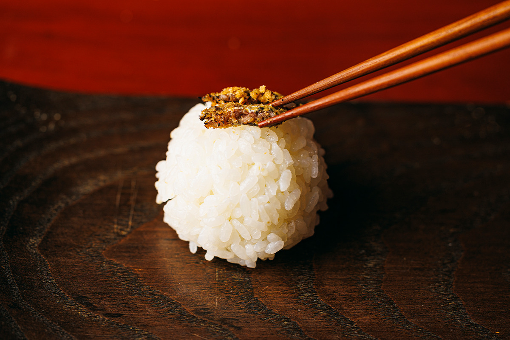
Летом в Тояме жарко и влажно, зимой всё заносит снегом, и дрожжам с молочнокислыми бактериями здесь живётся отлично. Дорога по префектуре ведёт от гор до моря: от старой лавки, где растят закваску для кодзи, до рыбного цеха, где сардины полгода зреют в рисовых отрубях.
Климат
Префектура, где всё бродит
В Тояме много сакэварен, а также заводов мисо и соевого соуса: климат будто создан для микроорганизмов, и вокруг брожения здесь сложилась целая кухня. По числу мастерских кодзи префектура входит в тройку лидеров Японии, в 2022 году их оставалось 70–80.
Кодзи это плесневый гриб, выращенный на варёном рисе, ячмене или сое, и без него не бывает ни мисо, ни амадзакэ. Но чтобы вырастить кодзи, нужна закваска, танэкодзи, а делают её во всей Японии всего около десяти мастерских. Единственная во всём регионе Хокурику мастерская, которая производит и продаёт танэкодзи, это «Исигуро танэкодзи» в горном городе Нанто.
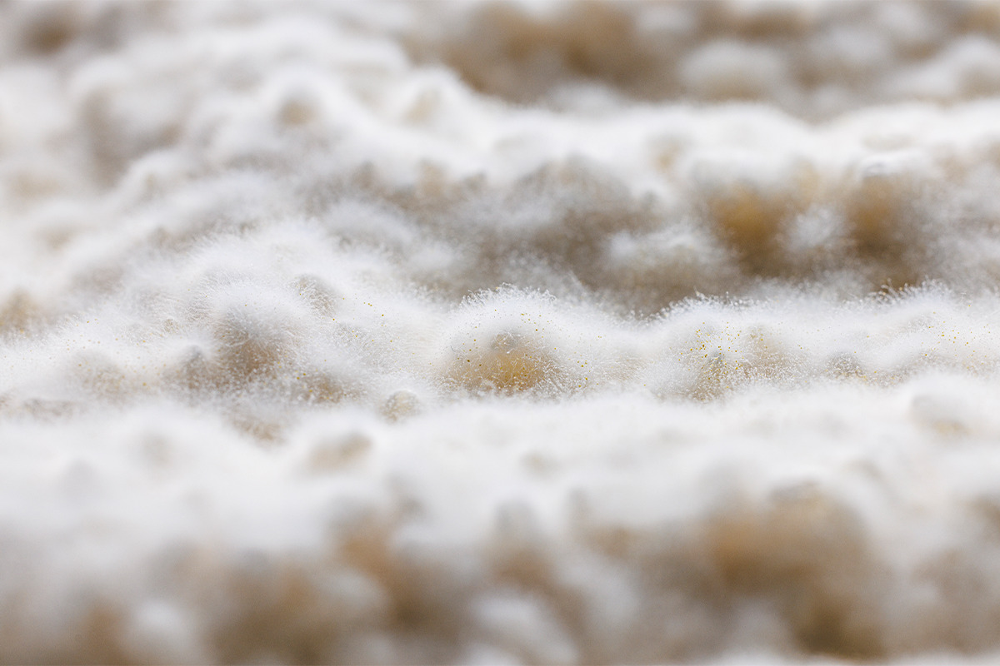
Горы
«Исигуро танэкодзи»: закваска, которую делают в одиночку
Фукумицу, район Нанто на юго-западе префектуры, когда-то был важной станцией на дороге шёлка и риса, которая вела в край Кага и в Киото. Улица до сих пор похожа на старый почтовый город, и на ней стоит «Исигуро танэкодзи». Кодзи здесь делают с эпохи Бунсэй (1818–1830), а в 1895 году семья повесила на вход занавес мастерской, которая умеет делать саму закваску.
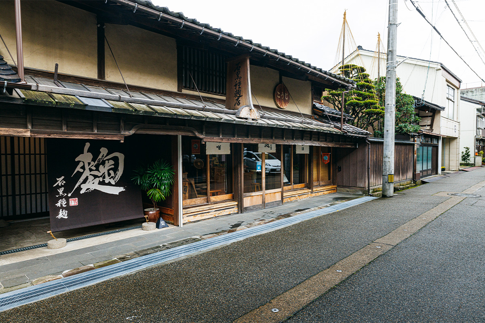
Хозяин лавки Хатиро Исигуро восьмой в роду мастеров кодзи и четвёртый, кто делает закваску. Он держится старого метода и, кроме танэкодзи, выпускает рисовый кодзи, мисо, сладкий рисовый напиток амадзакэ и другие ферментированные продукты.
Споры и ферменты
Кодзи это микроскопический гриб. Варёный рис, ячмень или сою посыпают закваской, то есть спорами гриба, и он разрастается по зёрнам. С рисом получается рисовый кодзи, с ячменём ячменный. Пока гриб растёт, он вырабатывает множество ферментов, и именно они дают мисо и амадзакэ сладость и глубину вкуса.
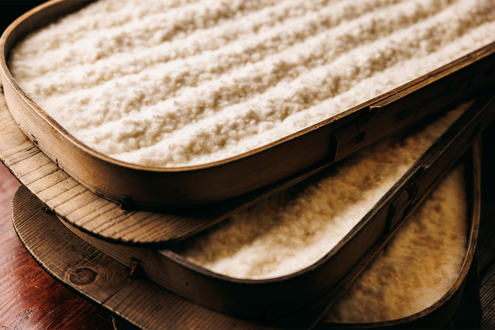
В рисовом кодзи, как считается, больше ста видов ферментов, и вся суть кодзи в них: чем больше ферментов и чем они сильнее, тем лучше кодзи. Закваска по отношению к нему примерно то же, что семена к растению. «Если закваска бодрая и спор в ней много, кодзи выходит богатым на ферменты», объясняет хозяин. Рисовый кодзи лавки проверяли в государственном учреждении: показатель осахаривающих ферментов оказался выше 5000 единиц при обычных 1000–2000.
Секрет для одного наследника
Рецепт закваски передают только одному наследнику. Хозяин не раскрывает его ни родным, ни работникам и делает танэкодзи один, весной и осенью. Известно лишь, что на варёный рис сыплют золу от листьев камелии. «Зола делает рис щелочным, посторонние микробы гибнут, и выживает только гриб кодзи. А вещества из золы он ещё и любит, так что споры получаются крепче».
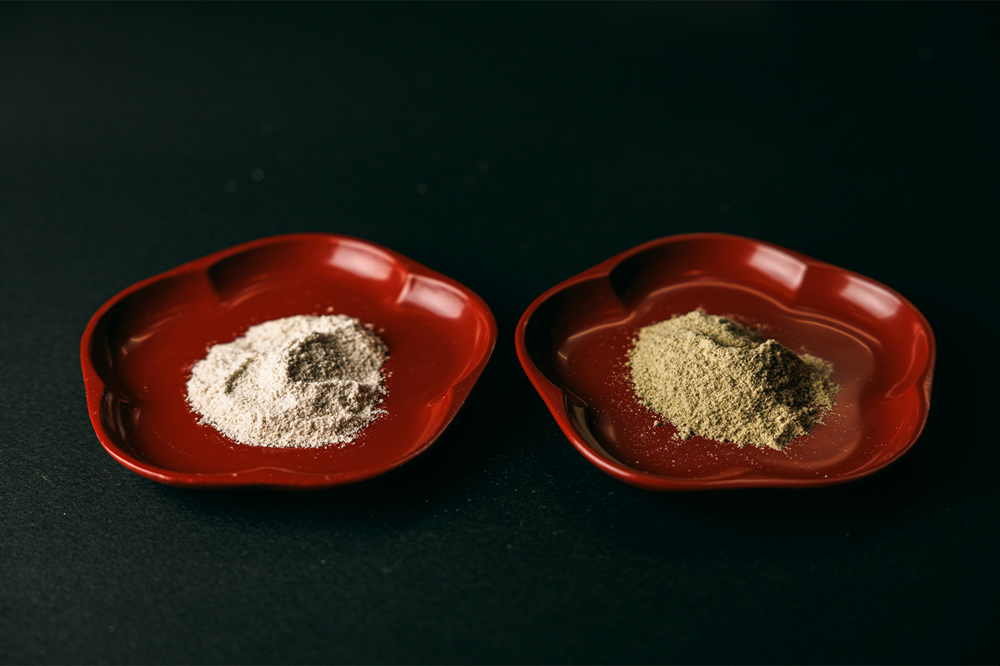
«Отец говорил: мастер должен чувствовать кожей, и ни за что не разрешал ставить в камеру гигрометр. Я тайком мерил, а на следующий день находил прибор в мусоре, и так раз пять. Пришлось на несколько месяцев поселиться в камере и учиться телом. Как я тогда не получил тепловой удар, сам не понимаю. Через несколько лет я уже с порога чувствовал, высокая там влажность или низкая»
Хатиро Исигуро
Рассказывает он это легко и весело.
Деревянные лотки и бессонные ночи
Рисовый кодзи из своей закваски здесь делают по способу кодзи-бута, как и при основании лавки. Метод использует тепло самого брожения. Рис с закваской раскладывают слоем 2–3 см в лотки из японского кедра суги, чтобы к нему проходил воздух, и лоток за лотком ставят на деревянные полки камеры. От брожения температура там поднимается до 32 °C, а влажность до 98%. В этой парилке мастер днём и ночью меняет лотки местами, чтобы тепло доходило до всех равномерно, и ловит малейшие перемены погоды.
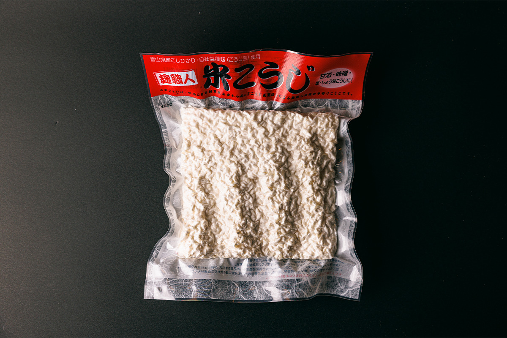
«Если ставить лотки прямо друг на друга, выступит влага, и питательные вещества растворятся на поверхности риса. Гриб наестся с поверхности и не станет пускать нити вглубь. А ферменты он выделяет как раз тогда, когда тянется за едой. Кодзи живой, баловать его нельзя»
Хатиро Исигуро
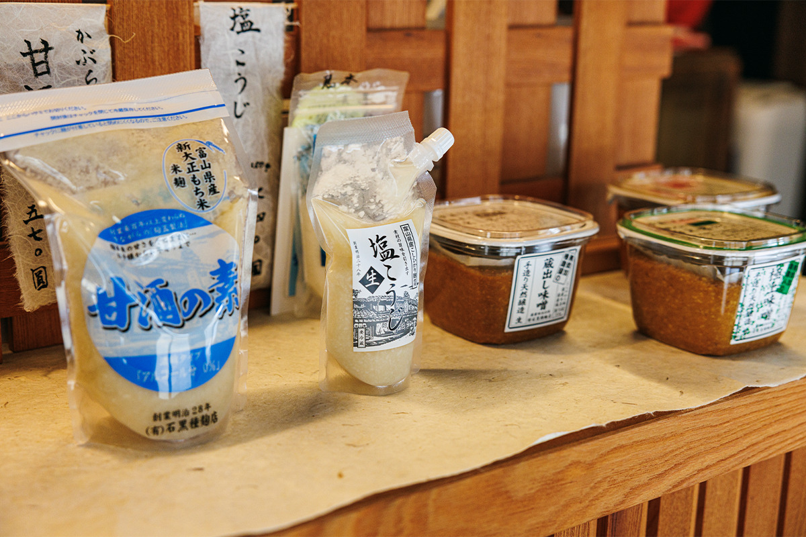
Вся работа ручная, долгая и тяжёлая, зато нити грибницы проникают в каждое зерно. Когда грибница разрастается, мастера говорят, что рис «хадзэру». Если нити прошли зерно насквозь, это «сохадзэ», если не проросли и рис затвердел, это «хадзэоти». Кодзи «Исигуро танэкодзи», разумеется, сохадзэ.
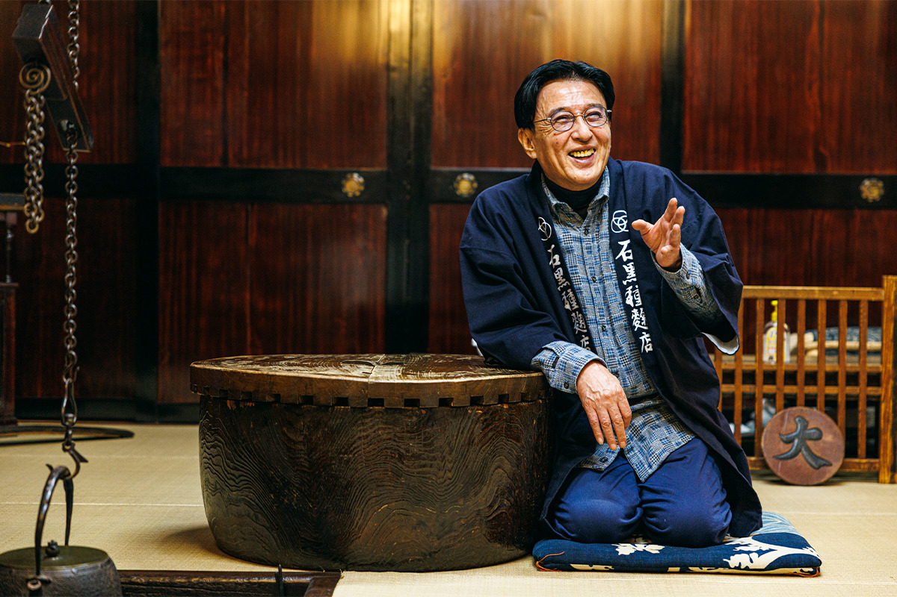
«Многие мастерские поставили машины. С ними гораздо легче и можно делать больше, но так кодзи не прорастает насквозь. Мы держимся старого способа, потому что вкус другой: другой вкус, другая глубина, другие ферменты. Я не изменился. Изменилось всё вокруг»
Хатиро Исигуро
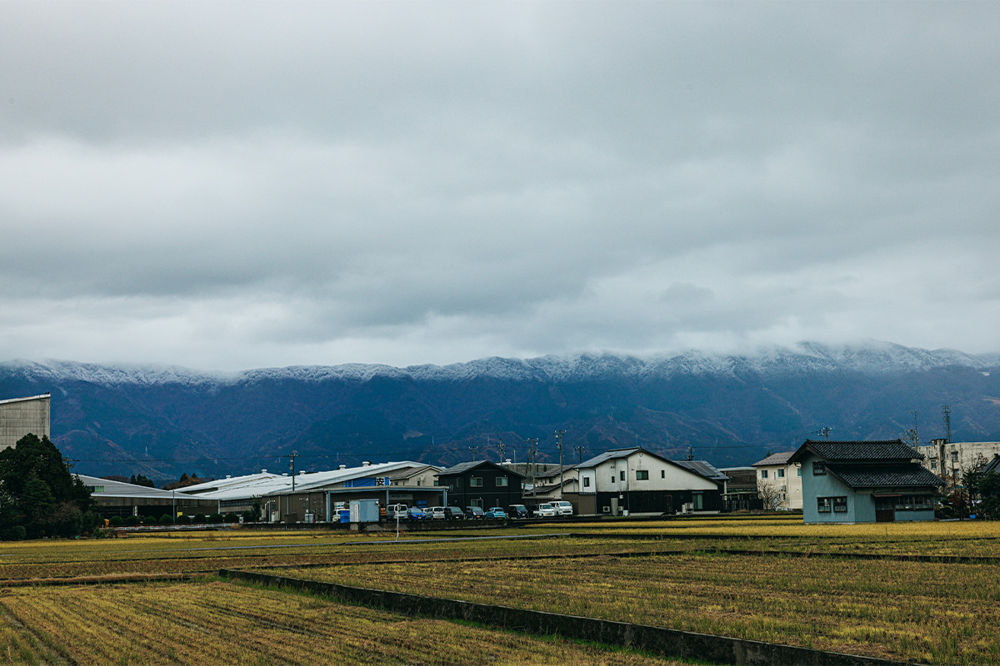
Лавка стоит среди зелёных гор, и попробовать её кодзи и мисо на месте значит почувствовать кухню Тоямы всеми чувствами.
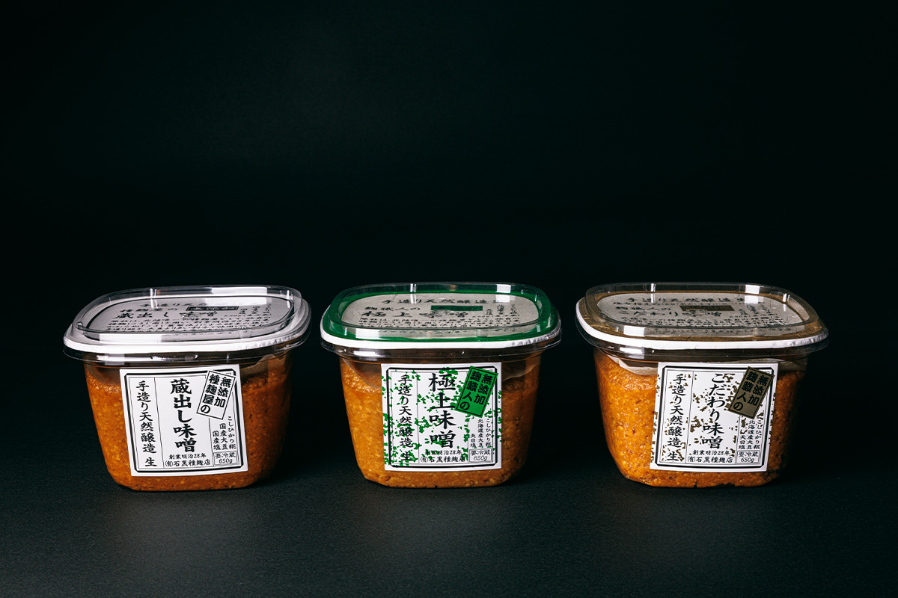
«Исигуро танэкодзи»
- Адрес
- префектура Тояма, Нанто, Фукумицу-Синмати, 54
- Телефон
- +81 763-52-0128
- Часы работы
- понедельник–пятница 9:00–18:00, суббота, воскресенье и праздники 10:00–17:00
- Выходные
- 1-е, 3-е и 5-е воскресенье месяца
Море
Конка-дзукэ: рыба, которая полгода зреет в отрубях
На другом краю префектуры, у залива Тояма, стоит портовый город Хими. Здесь брожение морское: местная гордость конка-дзукэ, рыба в рисовых отрубях. Её делают по всему побережью Японского моря. В Тояме так называют сардину, скумбрию или бури, пойманные в самые холодные месяцы и заквашенные в отрубях. Рыбу закладывают в отруби с рисовым кодзи и оставляют на полгода. Слово «конка», по одной из версий, возникло из «конука», что значит «мелкие отруби». В соседней Исикаве говорят так же, а в Фукуи такую рыбу зовут «хэсико».
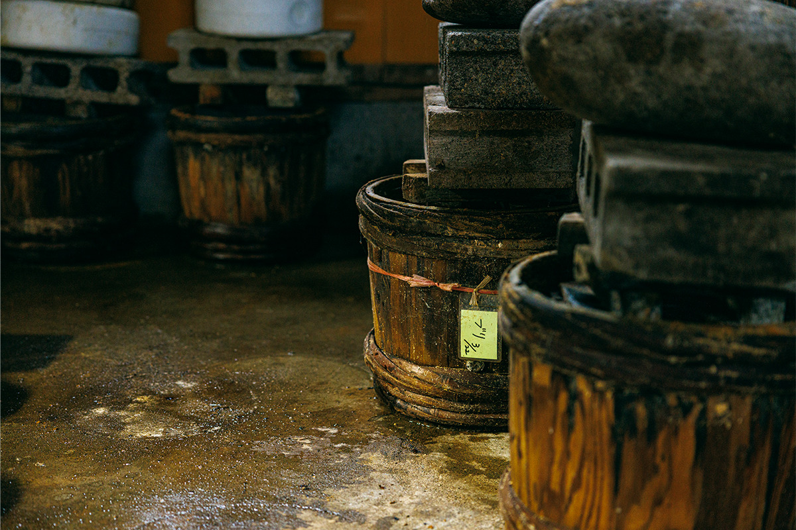
Отруби с рыбы не смывают. Её слегка обжаривают и едят с сакэ или кладут на рис. В «Какита суйсан» советуют добавлять конка-дзукэ в картофельный салат и пасту: вкус у неё сильный, и с ней можно придумать много блюд.
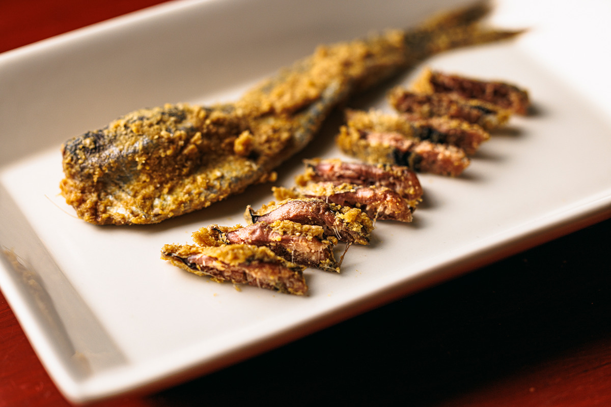
Шестое поколение у рыбного порта
Цех «Какита суйсан» стоит рядом с рыбным портом Хими, а дело семье больше ста лет. Кроме конка-дзукэ, здесь делают сушёную рыбу и мелкие сушёные сардины нибоси, без добавок и вручную. Пятый хозяин больше шестидесяти лет закупает рыбу на торгах. Весной 2022 года дело перешло к его дочери, Сэкико Какитани, но отец по-прежнему каждое утро едет в порт и выбирает лучшую рыбу, в том числе сардины для конка-дзукэ. «С годами у отца будто обостряется звериное чутьё, глаз у него безошибочный», говорит она.
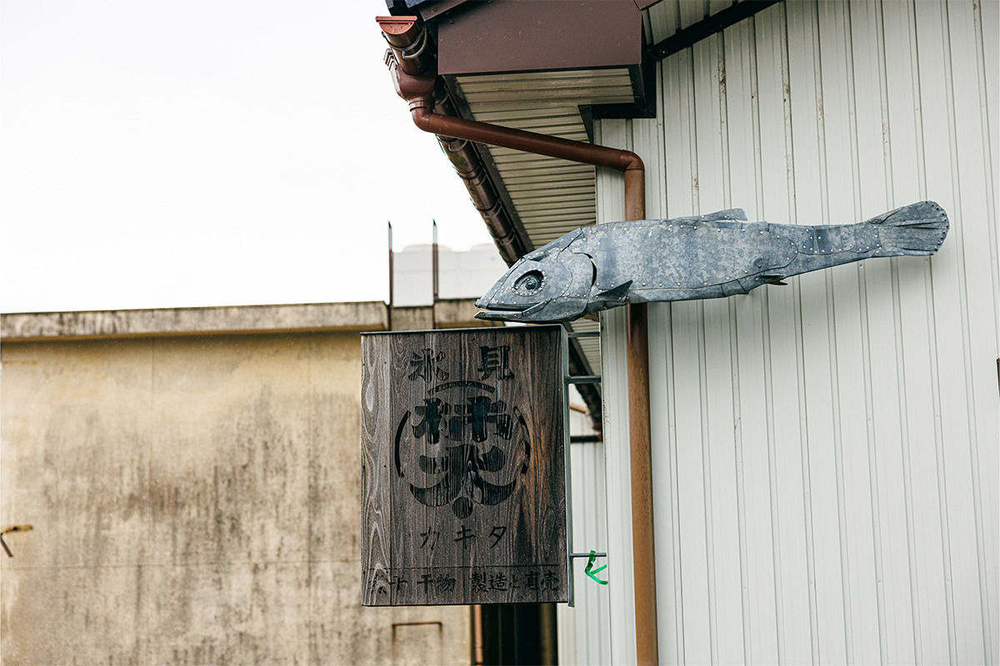
Для рыбы главное свежесть. Как только её привозят с порта, её моют, чистят, посыпают солью с полуострова Ното и неделю держат в соли. Соль вытягивает воду, а вкус остаётся. Всё делают руками, и успеть посолить рыбу в тот же день трудно. Но если отложить хотя бы на сутки, при засолке появится запах порчи, поэтому работают быстро и при этом аккуратно.
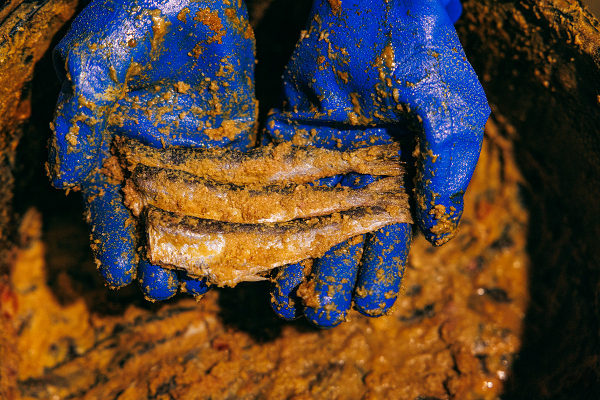
Бочки, которым восемьдесят лет
После соли начинается главная закладка. Рыбу пересыпают отрубями с фермы в Куробэ, где растят рис без химикатов или почти без них, рисовым кодзи от мастерской из Хими, осадком сакэ (сакэ-касу) от соседней сакэварни и своим острым перцем. Слой за слоем всё укладывают в бочки из японского кедра суги. Бочки примерно восемьдесят лет назад отдал завод мисо и соевого соуса по соседству.
«Один из ведущих японских специалистов по ферментации сказал мне так: дрожжи и бактерии, жившие в бочках, микробы, которые давно живут в нашем цехе, и ветер айно кадзэ с Японского моря трудятся вместе, и от этого конка-дзукэ получается вкусной»
Сэкико Какитани
На бочки кладут камни весом в несколько десятков килограммов, и рыба зреет больше полугода. Весной дрожжи бродят так сильно, что иногда сбрасывают камень с бочки. Зато благодаря им вкус рыбы сгущается, становится мягким и глубоким. Тот же специалист отговорил хозяйку менять старые бочки на удобные пластиковые баки, и она оставила дерево.
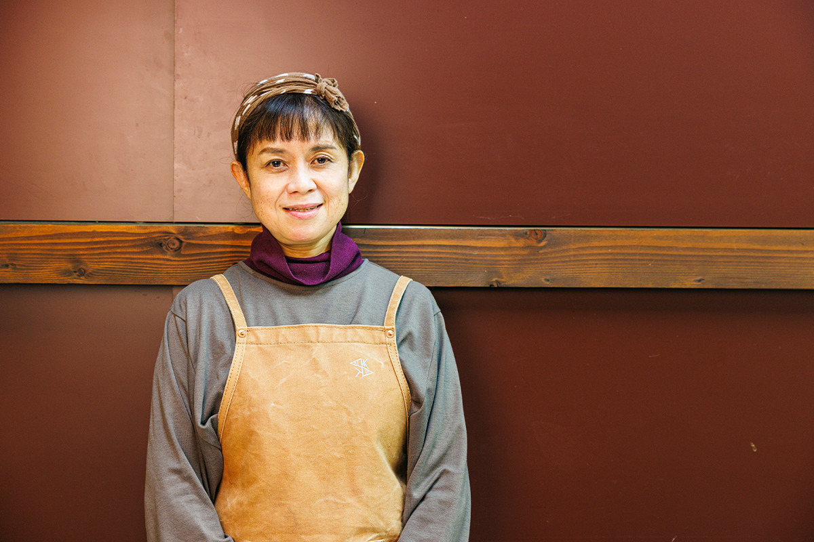
«Состав простой, способ тоже. Но мы не берём ни консервантов, ни антиоксидантов: только свежая рыба из Хими, добавки, которые мне самой нравятся, и сила брожения. Я хочу сохранить кухню Тоямы, и конка-дзукэ в первую очередь»
Сэкико Какитани
Каша для дочери
Признаётся она, что раньше сама не любила ни конка-дзукэ, ни сушёную рыбу. Всё изменилось, когда родилась дочь. На окуидзомэ, первую символическую трапезу малыша, её мать посоветовала сварить рисовую кашу на бульоне из нибоси семейного цеха и дать девочке верхний жидкий слой.
«Я съела ложку и будто почувствовала, как оживает каждая клетка. Никаких приправ, одни нибоси, а вкус такой глубокий. Дочка тоже ела жадно. Тогда я поняла, что хочу передать людям то, что мы делаем долго и руками. Вот что значит передавать кухню»
Сэкико Какитани
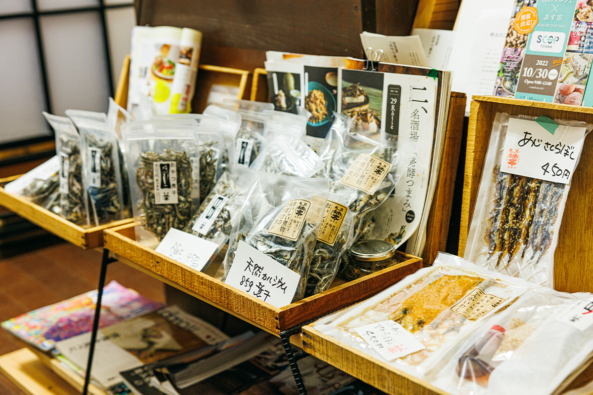
Гости, пробуя конка-дзукэ, сушёную рыбу и нибоси, часто говорят, что это «вкус из детства». «Память человека часто держится за еду. Хочется будить эти воспоминания и видеть, как людям вкусно», улыбается хозяйка.
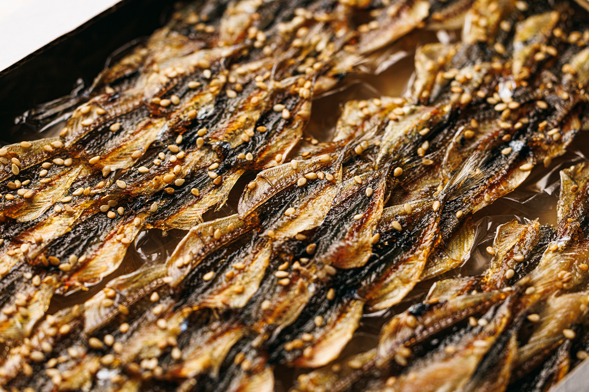
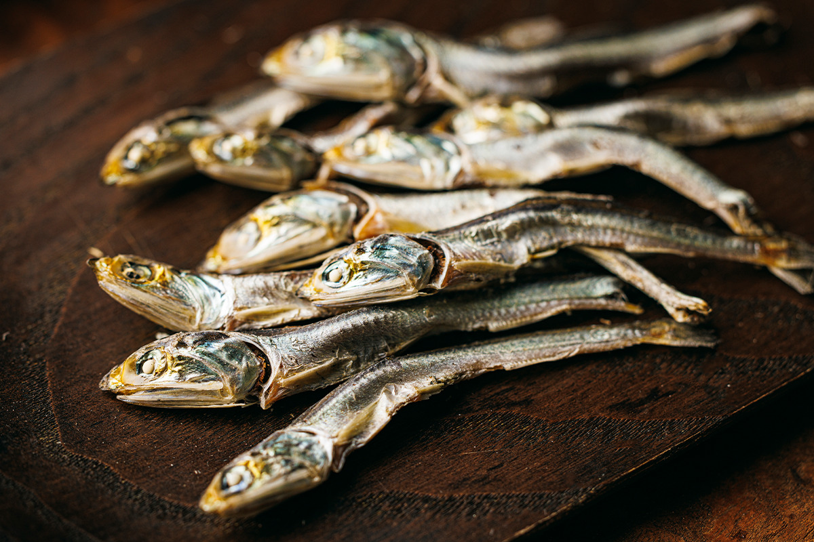
«Какита суйсан»
- Адрес
- префектура Тояма, Хими, Кита-Омати, 3-37
- Телефон
- +81 766-74-0025
- Часы работы
- 8:00–15:00, только по предварительной записи по телефону или почте
- Выходные
- среда, суббота, воскресенье, праздники
- Как добраться
- от станции Тояма 17 минут до Такаоки по линии «Айно кадзэ Тояма», оттуда автобусом около 50 минут до остановки «Хими-тюо» и 7 минут пешком
- Сайт
- kakita-himi.net
Маршрут
День в Хими с бочкой и бутылкой
Летом 2022 года один редактор книг о ферментации описал, как провёл бы день в Хими. Главное в его плане было успеть к вскрытию бочек «Какита суйсан». Рыбу закладывают зимой, когда она жирнее всего, и достают после сезона дождей. 2022 год был особенным: Сэкико Какитани впервые вскрывала бочки как хозяйка. Поначалу конка-дзукэ получалась не всегда удачно, и она даже думала бросить, но её поддержали журналисты, приезжавшие писать о цехе, и друзья-рестораторы. На вскрытие бочек приходят поклонники цеха, и с ними можно познакомиться.
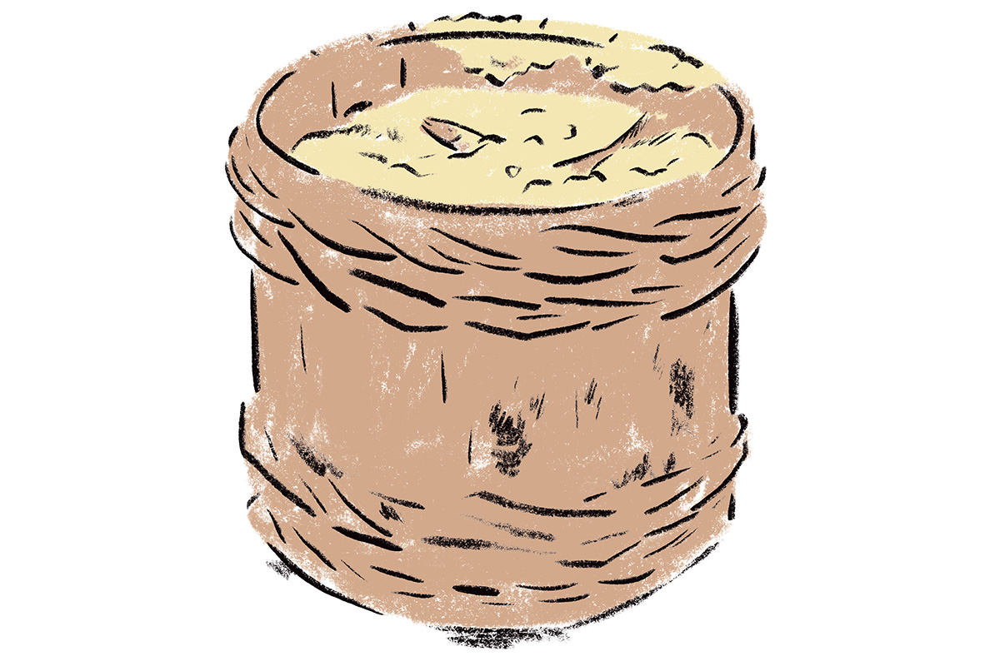
Сардину, по его совету, едят прямо с отрубями, чуть обжарив: мягкая рыба тает на языке, приятная молочнокислая кислинка смешивается с глубоким вкусом выдержки. А запивать её он советует холодным «Риэмоном» сакэварни «Такадзава сюдзодзё». Это игристое, слегка мутное, свежее сакэ, но довольно крепкое, 19 градусов. Отруби для «Какита суйсан» дают рисоводы «Хамада фарм» из Куробэ, и семья редактора сама каждый год заказывает у этой фермы новый рис.
Сакэварня в нескольких минутах
«Такадзава сюдзодзё» стоит в нескольких минутах ходьбы от «Какита суйсан». Экскурсий по сакэварне для всех желающих нет, но в магазине можно купить сакэ и послушать объяснения сотрудников. Кроме «Риэмона» редактор советовал взять AKEBONO LIGHT на белом кодзи. По словам главы и мастера сакэварни, седьмого в роду, лучше всего оно летом с местными скальными устрицами. Вкус сухой, как у белого вина, а этикетку нарисовал художник манги родом из Тоямы.
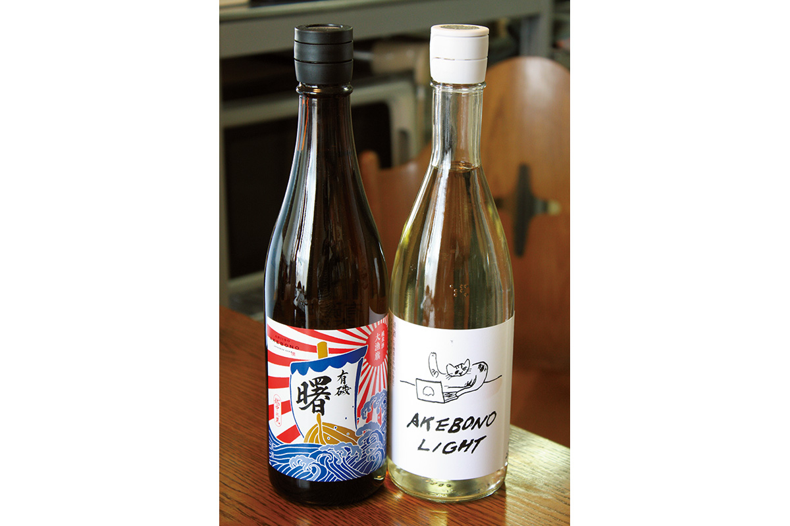
Землетрясение на полуострове Ното 1 января 2024 года задело и Хими. У «Такадзава сюдзодзё» разрушились три здания, и около месяца сакэварня не работала, а в феврале 2024 года снова начала делать сакэ. «Какита суйсан», как сказано на её сайте, тоже на время останавливала производство и продажу, а затем открылась снова.
«Такадзава сюдзодзё»
- Адрес
- префектура Тояма, Хими, Кита-Омати, 18-7
- Телефон
- +81 766-72-0006
- Часы работы
- 9:00–18:00
- Выходные
- воскресенье
Если останется время
Еда в Хими не ограничивается рыбой из бочки. Редактор советовал зайти в «Химицу карэ», карри-лавку Юки Нака, чей вклад в карри-культуру Тоямы очень велик, в «Сакана то сауна», рыбный бар, где за плитой стоит увлечённый сауной повар по прозвищу «Комбу-тян», и в Beer Cafe BREWMIN, тапрум местной крафтовой пивоварни. А за самой настоящей местной едой стоит идти в кафе «Морикава» в духе эпохи Сёва: там подают обед дня, и Сэкико Какитани его тоже рекомендует.
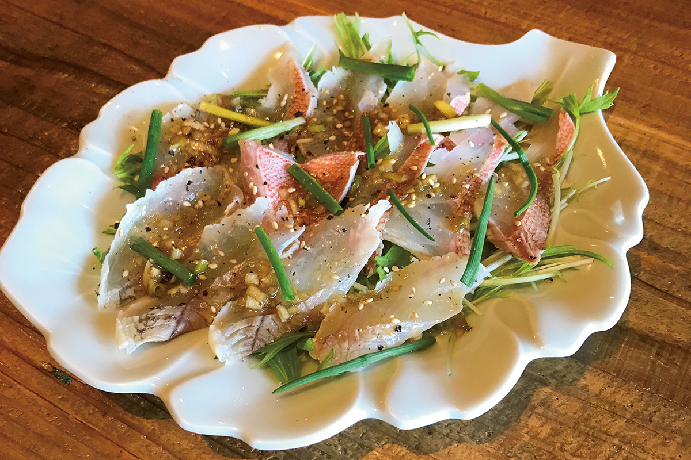
Фото: Синпэй Фукадзава.